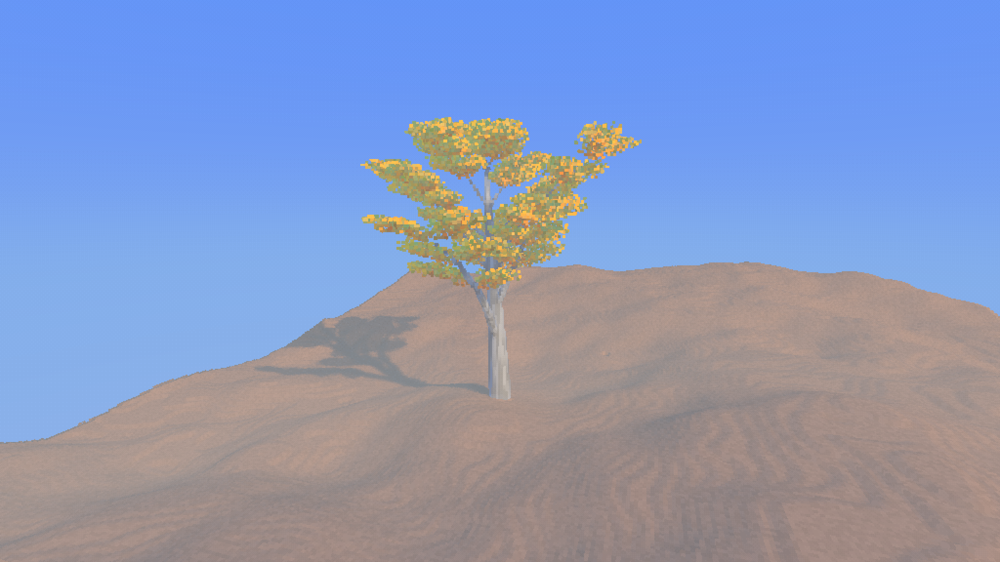
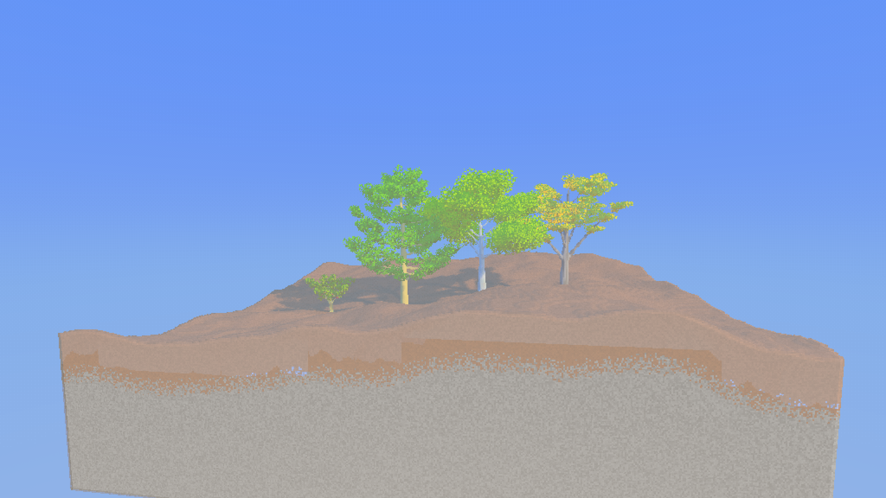

直立，而非一团圆冠
参考银杏幼时偏锥形、随年龄渐趋不规则的树形：保留贯通的主干，错落安排向上的侧枝，收窄上部枝条的展开范围。
Species study · 2026.10.29
给花园添一树秋色。
从扇形叶、向上伸展的枝条，到一层温暖的金黄：沿用 Re: Flora 的体素语言，让银杏拥有自己的轮廓，而不只是换一种颜色。

参考银杏幼时偏锥形、随年龄渐趋不规则的树形：保留贯通的主干，错落安排向上的侧枝，收窄上部枝条的展开范围。
在扁平的体素叶簇中留下窄基部、宽叶缘和浅浅的中央裂口。叶簇沿枝条附着，延续现有风动，而不是额外叠放一层装饰模型。
金黄基础色按树独立传递，再叠加玩家保存的个体色彩变化。灰褐树皮以纵向断续纹理区分身份，不重染邻近树木。
设计边界：这是固定的秋季外观；扇形体素叶簇是风格化表达，不是逐片建模的植物学叶片。程序参数属于美术取舍，而非生理生长方程。
同一原生场景中的混合树种检查。银杏呈现金色；苹果树、松树与法国梧桐保留各自的绿色树冠。它们共用成长、风动和存档系统，而不是四套独立实现。

下列数据记录银杏实现 d753b383 的交付验证。环境为 macOS、Apple M4 Pro、MoltenVK；它们证明正确性，不代表密集树林性能已获验收。
全量测试通过 · 0 失败 · 15 忽略
另有 4 项碰撞库测试通过。当前平台的集成测试目标无适用用例。
| 种子 | 枝段 | 叶实例 | 苹果 | 高度 / voxel |
|---|---|---|---|---|
| 7 | 250 | 12,272 | 0 | 123.963 |
| 122 | 250 | 12,249 | 0 | 126.495 |
| 907 | 250 | 12,146 | 0 | 111.667 |
| 125 · 混合 | 250 | 12,291 | 0 | 118.641 |
单元测试另覆盖种子 0 与 u64::MAX、多成长阶段、枝条连通、可重复生成、叶簇边界、独立配色、无缓存树皮发布，以及商店购买与库存恢复。实机检查经过年龄 0.45、序列化恢复，再返回精确的成熟形态。
最终原生日志未发现 ERROR、WARN、panic 或 VUID；退出记录为 phase=complete failures=0。DDGI 的 failed=1081 是埋藏探针的无效计数，不是运行失败。未改动生成源码或保存的 GUI 配置。
金字塔形树冠、扇形叶与金黄色秋叶；常见成年高度 50–80 英尺。用于辨识特征，不把真实尺寸直接搬进花园。
幼树偏锥形，随年龄变得不规则；叶片常有双裂，春夏绿色、秋季清黄。固定金秋外观是本次美术选择。
短枝、扇形叶和灰色裂纹树皮的辅助参考。没有把索引摘要当成已完成的全文审阅。
扇形、常带裂口的叶片与金黄色秋叶，仅用于交叉印证。完整调研说明保留在本地研究笔记中。
两张 PNG 均由本项目原生 Release 截图功能于 2026-10-29 生成，原始尺寸 5120 × 2880。仅复制和重命名，无裁剪、调色、合成或 AI 修图。页面按比例缩放显示完整画面，点击可查看原图。
检查场景在截图时隐藏 UI，时间固定为 0.43，保留实时风；单树相机距离 0.8、混合场景距离 1.8。风的相位可能使重新截图的像素不同。场景不写入玩家花园或 GUI 配置。
RE_FLORA_TREE_SPECIES_REVIEW=ginkgo RUST_LOG=info \
cargo run --release -- --hidden --mute \
--screenshot player-default target/ginkgo-review/ginkgo-final.png \
--screenshot-delay 4 --auto-exit 6混合场景将 ginkgo 改为 mixed 并更换输出文件名。其他银杏形态可加 RE_FLORA_TREE_SPECIES_SEED=7 或 907。正常游玩请省略检查环境变量与截图参数。
原始文件名：ginkgo-final.png → ginkgo.png；mixed-final.png → mixed.png。图片署名 Re: Flora contributors，按 CC BY-NC-SA 4.0 使用。未导入外部照片、纹理或生成式图像。
文件校验值与详细证据见 随附来源记录。本 HTML 无脚本、在线字体或外部资源请求；连同本目录两张 PNG 即可离线浏览。研究笔记链接需要仓库中的对应文件。